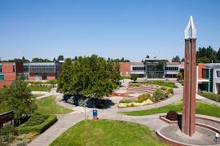
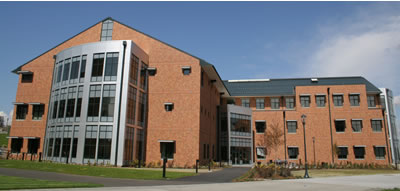
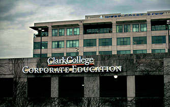
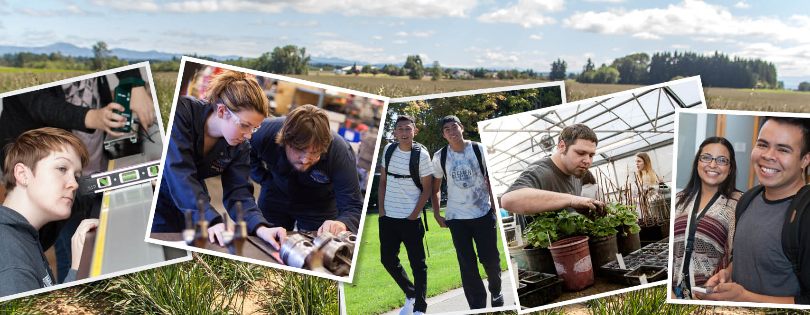
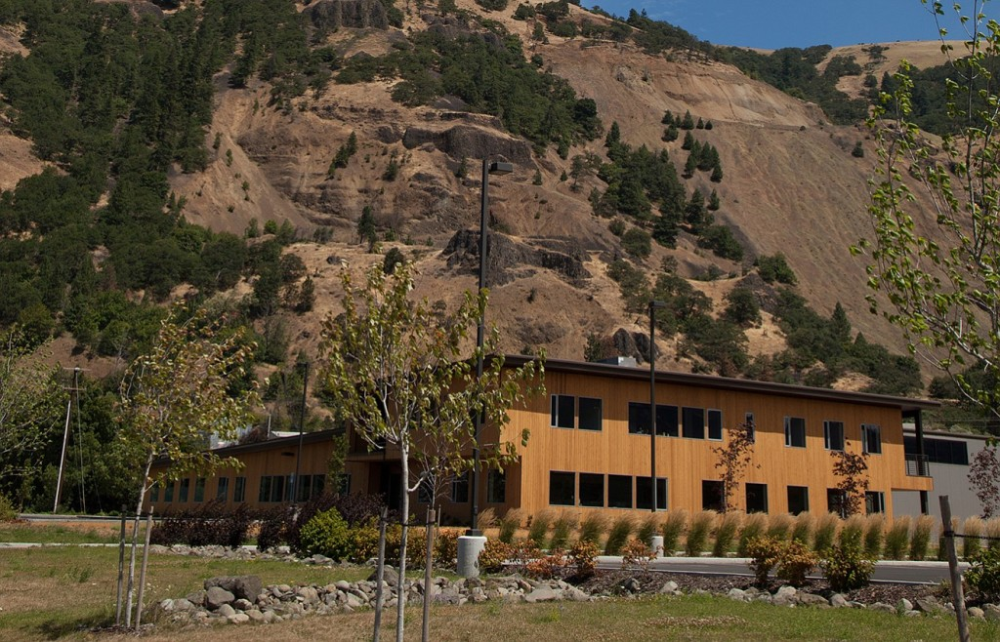

The Campuses of Clark College
A Tour of Southwest Washington's Local Community College
Clark College Main Campus
This is Clark College's main campus located just on the other side of Interstate 5 from Downtown Vancouver. Clark College occupies either side of a signifigant stretch of Fort Vancouver Way between Mill Plain and Fourth Plain. This is by far the largest of all Clark College Campuses, containing over 20 buildings that host a variety of classes and students services. This is my favorite location.
Source: Clark.edu
Clark College at WSU Vancouver
This a small, single-building campus of Clark College that offers courses to Clark College Students at city college prices on a university campus. Please note: if you plan on attending classes on this campus, you must pay for a parking pass to park in WSU Vancouver Ggeen lot for the quarter. It cost quite a bit money. There is also a Vancouver School District charter school located in this building.
Sources: Clark.edu, Clark.edu
Clark College at Columbia Tech Center

Columbia Tech Center is what I would call Clark College's largest satellite campus. This can be found in Camas, Washington on the far east end of Mill Plain. Clark College at Columbia Tech Center offers a variety of programs to choose from. So if you live in East County, you won't have to drive far to get to class.
Source: Clark.edu
Clark College Economic and Community Development
This campus location serves as Clark College's testing facility as well as non-credit classes. This campus can be found on the second floor of the Columbia Bank building in Downtown Vancouver.
Source: Clark.edu
Future Clark College Location at Boschma Farms
Clark College is set to open it's next campus at Boschma Farms in Ridgefield, Wasington. The land was donated by dairy farmers and Dutch emigrants Hank and Bernice Boschma, who accordding to Clark College, completed their citizenship course at Clark College to gain citizenship in the United States. This campus location is set to offer a variety of programs. Construction of this project is set to start in 2020.
Source: Clark.edu
Former Clark College Location in Bingen, WA
The Clark College location set in Bingen, Washington was meant to serve a primarily isolated section of Washington State with higher education. The campus opened up in winter quarter of 2015. Clark College disconinued offering courses at this campus location in June of 2016 just over a year after opening due to low enrollement rates.
Source: Columbian.com